- 在 X 開「文章」（Articles）→ 新增
- 封面上傳下面的封面圖（5:2 橫圖），標題按「複製標題」貼上
- 內文一段一段來：按每段右上的「複製這段」→ 貼到 X → 插入下面那張圖（圖下方可下載）→ 再複製下一段
- 發布後，用下面的短貼文「引用」這篇長文再發一次；之後幾天照最下面的「單則貼文」各引用一次
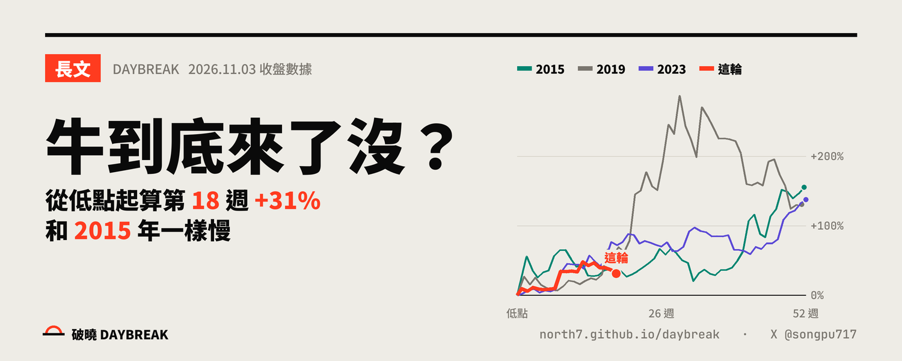

牛到底來了沒？我把週期數字攤開來看
從低點起算第 18 週，這輪比特幣只漲了 31%。2019 和 2023 年的同一週，都已經漲了將近 70%。
難怪這幾天很多人在問同一件事：不是說牛市來了嗎，怎麼越走越弱？
心情我懂。從 9/21 的高點 86,594 到 11/03 收盤 77,332，跌了 10.7%。ETF 10/30 和 11/02 兩天流出 10.4 億美元，恐懼貪婪指數一週內從 48 掉到 26。價格還比一年前低 30.5%。這種時候說「牛市」，聽起來確實有點刺耳。
所以我想把這件事拆成三個問題：「牛市」到底怎麼算、這輪在週期裡走到哪裡、正反兩邊各有哪些數字。
一、先講清楚「牛市」怎麼算
我不用感覺判斷，用一條固定的規則：收盤連 30 天站在「上升中」的 200 日均線之上，才算進入牛市；要退回熊市，得收盤連 30 天落在「下降中」的 200 日均線之下。
照這條規則，這輪是 2026-10-09 判定進入牛市。到 11/03，收盤已經連 55 天在 200 日均線之上，均線本身還在往上走（現在 73,157，30 天前 71,502）。
這條規則看的是趨勢有沒有翻過來，不是看會不會漲到哪裡。它說「牛市第 26 天」，意思是趨勢已經轉向，不是說接下來一定會漲。
二、這輪在週期裡走到哪裡了
先看三張長歷史的圖。
四輪對照：這輪很慢，但慢得很像 2015 年
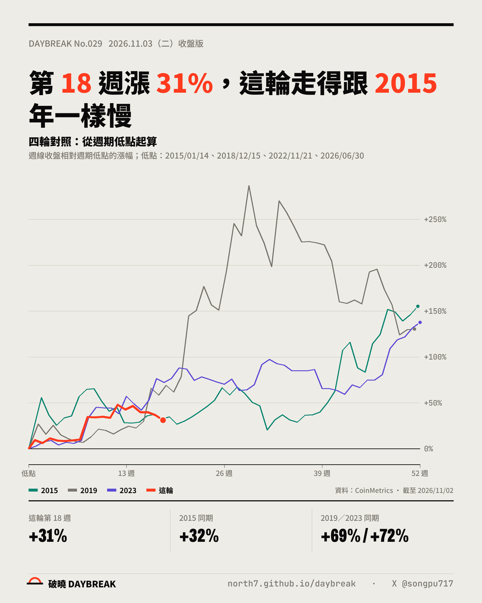
把四輪都從週期低點起算：這輪的低點是 6/30 的 58,525，到第 18 週漲了 31%。前三輪同一週：2015 年 +32%、2019 年 +69%、2023 年 +72%。
所以大家覺得「這牛怎麼這麼弱」不是錯覺，這輪確實比 2019、2023 慢一半。但慢不等於沒來：2015 年第 18 週也只有 +32%，之後還在 +20% 到 +67% 之間磨了快半年，到第 42 週（2015-11-02）才第一次站上 +100%。那段時間，也是一路有人說「這只是熊市反彈」。
樣本只有四輪，不代表這輪一定照 2015 的路走，只是說明「慢」在歷史上不是第一次。
冪律：離過熱很遠，比較靠近歷史底部
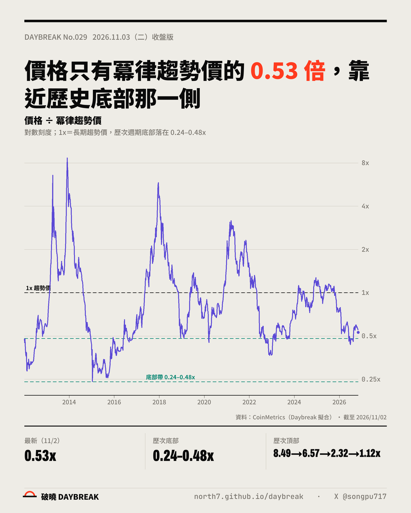
冪律是把比特幣十幾年的價格擬合成一條長期趨勢線。現在價格只有趨勢價的 0.53 倍。過去四輪的底部大概落在 0.24–0.48 倍，頂部則從 8.49 倍一路縮到 6.57、2.32、1.12 倍。
現在的位置貼近底部帶的上緣，離頂部那一側很遠。其他「離頂部多近」的指標也是同一個方向：
- Tidemark 頂部訊號是 0。
- MVRV Z、NUPL、Puell 這三個常用的頂部指標，在近四年裡的百分位只有 30–35 左右。
- Pi Cycle 比值 0.50（兩條均線交叉、比值到 1 時，過去常是頂部附近）。
- Mayer 倍數（價格 ÷ 200 日均線）1.06，幾乎貼著均線。
週線多空分數：翻多了，但力道還弱
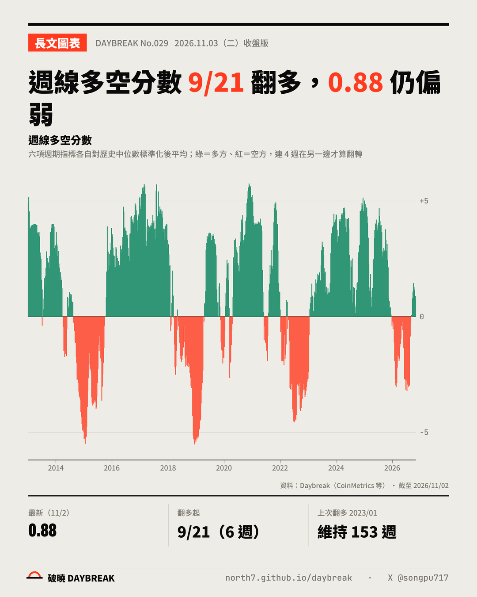
這是我追蹤的一個綜合分數，把六項週期指標（200 日均線位置、12 個月動能、MVRV、實現市值、交易所供給、實現獲利對虧損）各自對自己的歷史標準化後取平均。綠色是多方、紅色是空方，連 4 週在另一邊才算翻轉。
這輪從 9/21 翻多，到現在 6 週，分數 0.88。圖上看得很清楚：過去幾輪真正的牛市，分數都衝到 +3 以上，多數接近 +5；現在才剛冒出零軸，力道明顯還不夠。
三、站在「牛已經來了」這邊的數字
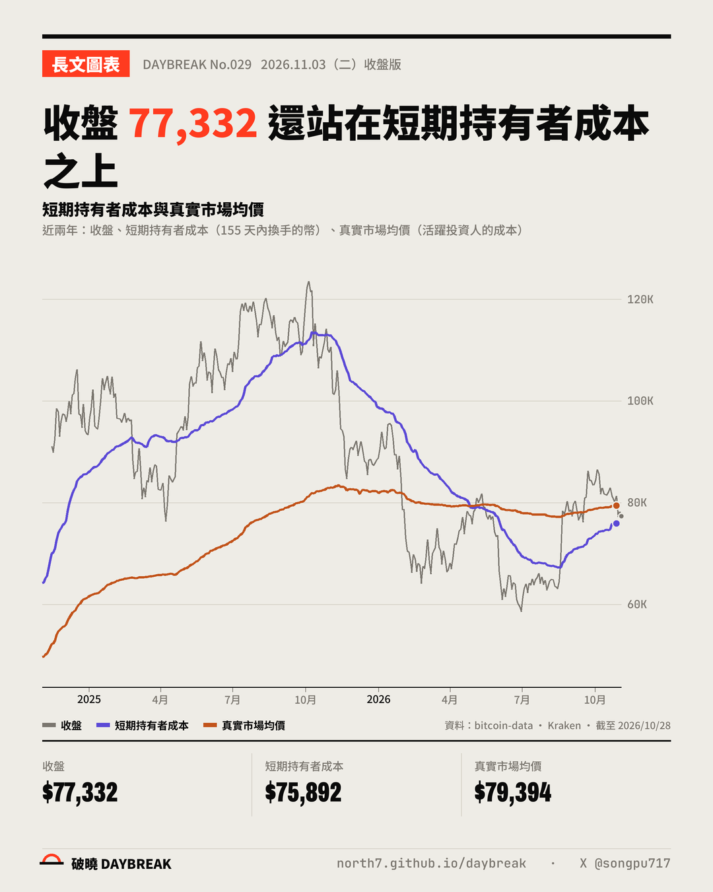
- 價格還站在短線成本之上：收盤 77,332，高於短期持有者成本 75,892。短期持有者是持幣不到 155 天的人，價格在他們成本之上，代表最近進場的人整體還沒被套。
- 新資金還在進來，只是變慢：實現市值（每顆幣最後一次移動時的價格加總）30 天 +0.67%，已經連 72 天是正的。
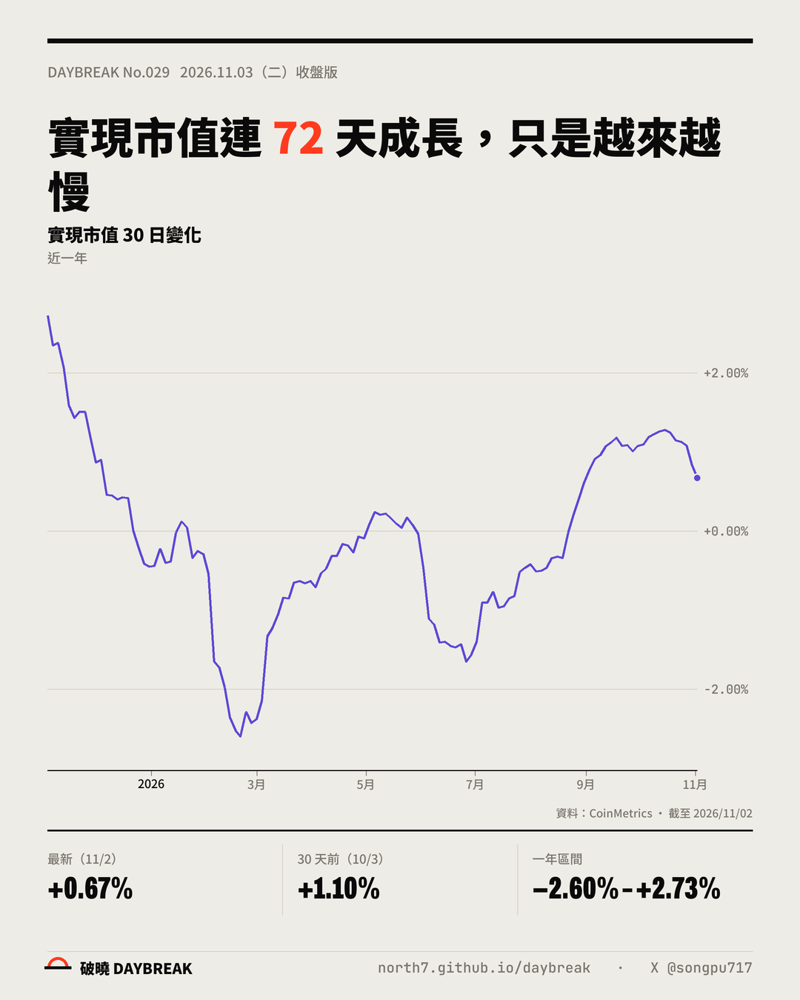
- 幣持續離開交易所：交易所上的 BTC 供給，90 天減少 0.76%。
我用 6 盞燈當牛市的佐證，現在亮 4 盞：MVRV 高於自己的一年均值、實現市值 30 天成長為正、交易所供給 90 天減少、收盤高於短期持有者成本。
四、讓人懷疑的數字，也是真的
懷疑不是沒有道理。現在最大的問題是：價格有撐住，但現貨買盤沒有跟上。
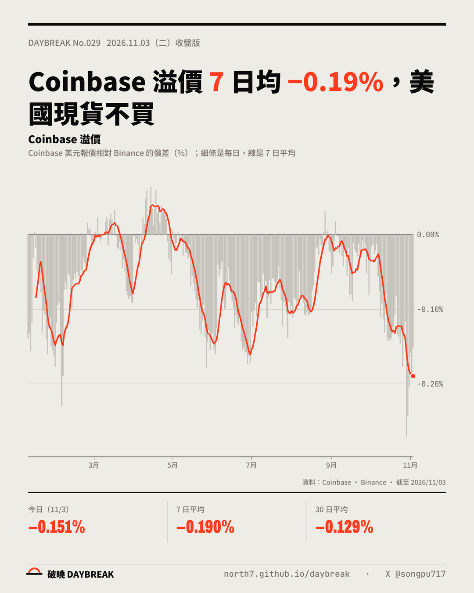
- 美國現貨在折價：Coinbase 溢價 7 日均 −0.19%，是我從 2026 年 1 月開始記錄以來最低。美國的現貨買家比全球其他地方更不積極。
- 亞洲也沒接：OKX 場外 USDT 對人民幣的價格比匯率低 1.14%，亞洲的買盤也偏弱。
- 穩定幣在縮：總量 2,960 億美元，30 天少了 111 億。
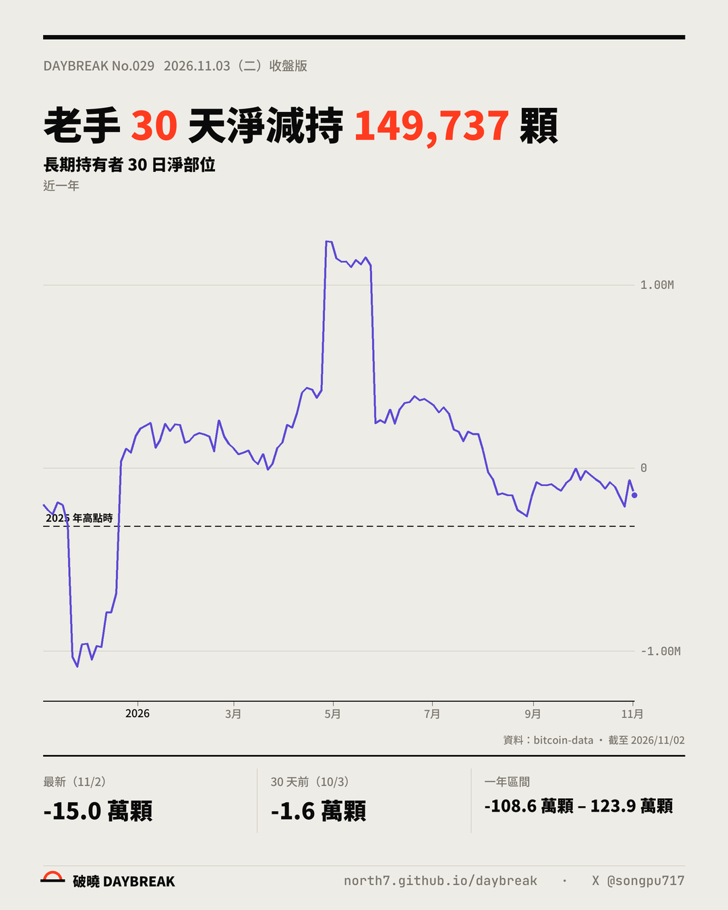
- 老手在賣：長期持有者 30 天淨減持 149,737 顆。這段淨減持從 8/4 開始已經 91 天，同期價格反而漲了 19.5%，等於老手一路趁反彈出貨。
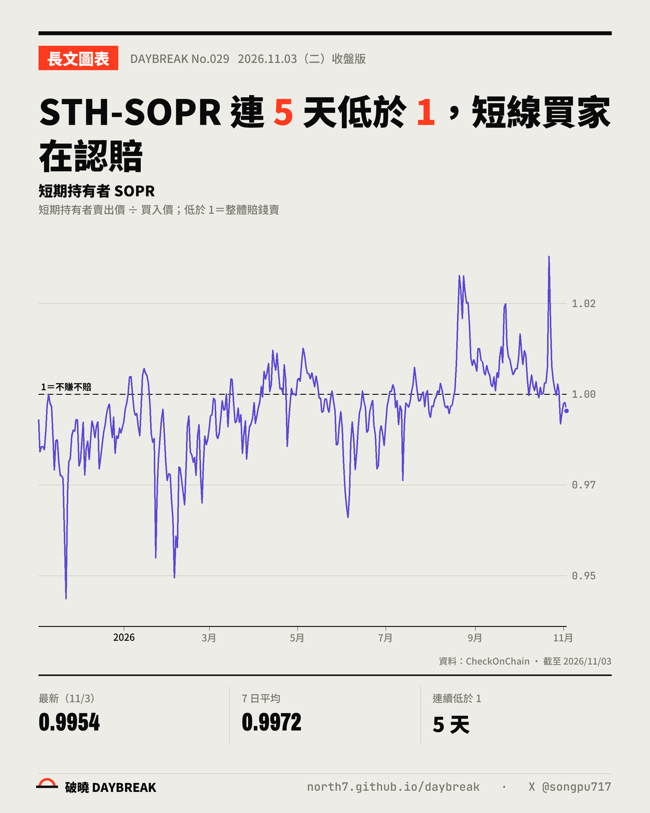
- 短線買家在認賠：短期持有者的 SOPR 是 0.9954，連 5 天低於 1，代表他們賣出時多半是虧的；短期持有者裡只有 32.29% 還在獲利，是 30 天來最低。
- 撐盤的是槓桿：永續合約的加權資金費率年化 10.7%，做多的人還在付錢維持部位。
另外兩盞沒亮的燈也要誠實講：12 個月動能是 −30.5%（價格比一年前低），短期持有者成本還比真實市場均價低 4.41%。
五、歷史上「牛市初段」長什麼樣子？
回到圖 2，週線多空分數過去幾次由空翻多：
- 2015-10-05：翻多後維持了 128 週，一年後價格 +154%。
- 2019-04-22：翻多後只撐了 30 週就翻回空方，是典型的假突破。
- 2023-01-23：翻多後維持了 153 週，一年後價格 +73%。
這輪是 2026-09-21 翻多。
所以我的看法是兩面的：牛市初段被懷疑很正常，2015 和 2023 初期都是。但 2019 也提醒我們，初段是有可能失敗的，沒有任何規則能事先排除這種情況。樣本只有三四輪，只能當背景，不能當保證。
六、接下來我會看這幾件事
- 短線買家什麼時候不再認賠：STH-SOPR 能不能收回 1 以上。
- 76K–75K 這一層守不守得住：短期持有者的平均成本在 75,192–75,892 之間（兩個資料源），11/03 這一層一天多了 13.5 萬顆短線籌碼。守住，成本就在這裡重新墊高；失守，帳面虧損的人會一下子變多。
- 現貨資金回不回來：Coinbase 溢價轉正、ETF 恢復淨流入。這是現在牛市缺的那一塊。
- 上方第一道關：真實市場均價 79,394。
- 週線多空分數能不能站穩、往上走：現在 0.88，還在零軸附近。
- 兩盞還沒亮的燈：照近 30 天的速度，短期成本大約 12/22 會上穿真實市場均價；價格持平的話，12 個月動能大約 2027-02 翻正。這兩個都是外推，不是預測。
日期上：11/6 美國非農、11/10 CPI、12/9 FOMC、12/25 Deribit 季度選擇權到期。
結論
照規則，牛市已經來了，今天是第 26 天。週期位置上，價格離過熱很遠、比較靠近歷史底部那一側；走法上，這輪跟 2015 年一樣慢。但這是一個「價格先走、現貨資金還沒跟上」的牛市初段，賣壓來自認賠的短線買家和趁反彈出貨的老手，撐盤的是槓桿。
我覺得大家懷疑一點都不奇怪。比起爭論牛來了沒，更值得盯的是：現貨買盤會不會回來。
你覺得這輪比較像 2015 年那樣慢慢磨上去，還是 2019 年那種假突破？很想聽聽你看到的。
這篇只整理數據，不是買賣建議。每天的數字我都放在破曉 Daybreak：https://north7.github.io/daybreak/
數據來源：價格、MVRV、實現市值、交易所供給 CoinMetrics；冪律為 Daybreak 以 CoinMetrics 價格擬合；短期持有者成本、真實市場均價、長期持有者淨部位 bitcoin-data；短期籌碼與 STH-SOPR CheckOnChain；Coinbase 溢價 Coinbase、Binance；ETF Farside、SoSoValue、The Block；資金費率 Deribit、OKX、Hyperliquid。
很多人在問：牛市不是來了嗎，怎麼越走越弱？
從低點起算第 18 週，這輪漲 31%，2019、2023 同期是 +69%、+72%。慢，但 2015 年同期也只有 +32%。
我把週期位置、支持和懷疑的數字都攤開了，配 8 張圖 👇
#比特幣 #BTC #牛市
拆出來的單則貼文
7-lth.png｜當天更新
3-powerlaw.png
2-regime.png

- On X, open Articles → Write
- Upload the cover below (5:2 landscape); paste the title with "Copy title"
- Work part by part: tap "Copy part" → paste into X → insert the chart below it (download link under each) → copy the next part
- After publishing, quote the article with the short post below; over the next days, quote it again with each standalone post at the bottom
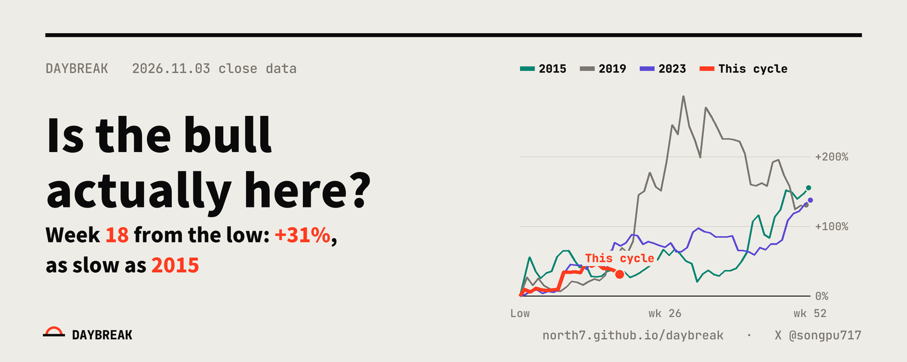

Is the bull actually here? Here's what the cycle numbers say
Eighteen weeks off the low, this cycle is up just 31%. By the same week, 2019 and 2023 were both up close to 70%.
No wonder I keep seeing the same question: if we're in a bull market, why does it feel like it's getting weaker?
Fair enough. BTC is down 10.7% from the Sep 21 high of 86,594 to a 77,332 close on Nov 3. ETFs lost $1.04B across Oct 30 and Nov 2. Fear & Greed dropped from 48 to 26 in a week. Price is still 30.5% below where it was a year ago. Calling this a bull market sounds a bit off right now.
So I split it into three questions: what counts as a bull market, where this cycle actually stands, and which numbers argue for it versus against it.
1. What counts as a bull market
I don't go by feel. I use one fixed rule: 30 straight closes above a rising 200-day moving average puts us in a bull phase. Going back to bear takes 30 straight closes below a falling 200-day MA.
By that rule, this cycle turned bull on Oct 9, 2026. As of Nov 3, we've had 55 straight closes above the 200-day MA, and the average itself is still rising (73,157 now, 71,502 thirty days ago).
The rule tells you the trend has turned. It doesn't tell you how far price goes. "Bull day 26" means the trend flipped, not that higher prices are guaranteed.
2. Where this cycle stands
Three long-history charts first.
Four cycles compared: this one is slow, but slow like 2015
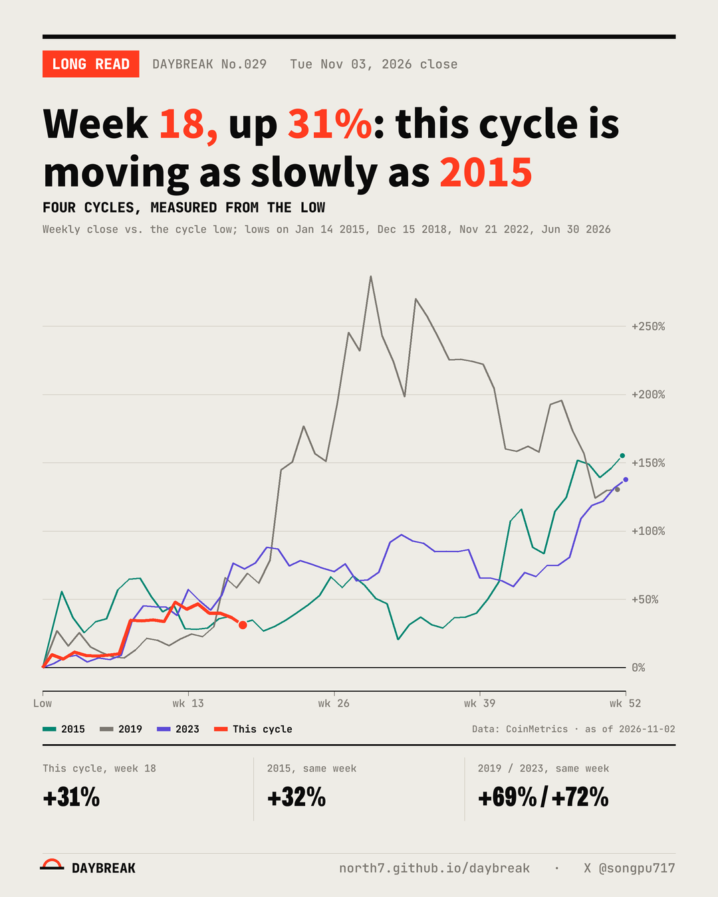
Measure every cycle from its low. This cycle bottomed at 58,525 on Jun 30 and is up 31% at week 18. The same week in past cycles: 2015 +32%, 2019 +69%, 2023 +72%.
So the "why is this bull so weak" feeling is real. This cycle is moving at about half the pace of 2019 and 2023. But slow isn't the same as absent. 2015 was also only +32% at week 18, then chopped between +20% and +67% for almost six more months, and first cleared +100% in week 42 (Nov 2, 2015). People were calling that a bear-market rally the whole time.
Four cycles is a tiny sample. This doesn't mean we'll follow 2015, only that slow has happened before.
Power law: far from overheated, closer to past lows
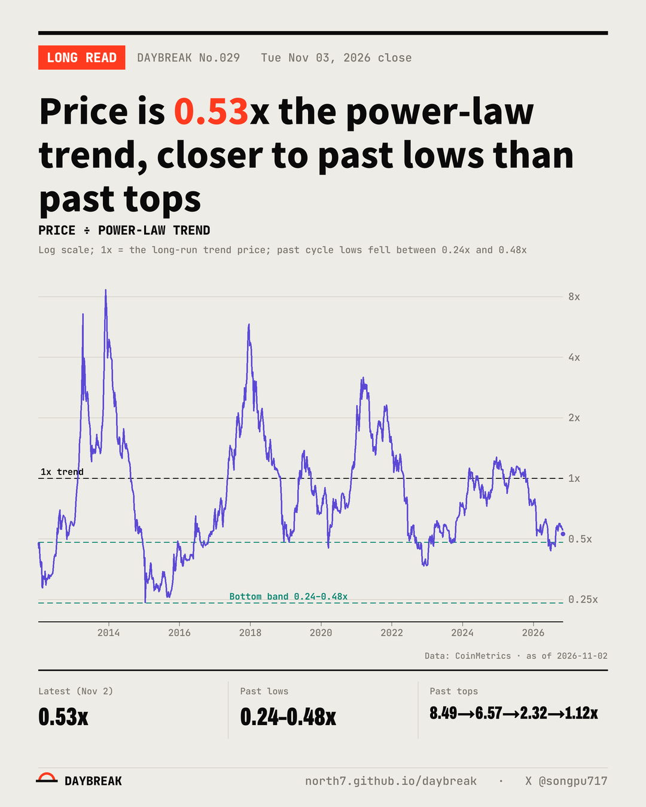
The power law fits a long-run trend line through more than a decade of BTC prices. Price is 0.53x that trend right now. Past cycle lows landed around 0.24–0.48x, and tops have shrunk from 8.49x to 6.57x, 2.32x and 1.12x.
We're sitting just above the bottom band, a long way from the top side. Other "how close to a top" gauges agree:
- The Tidemark top signal is 0.
- MVRV Z, NUPL and Puell, three common top gauges, sit around the 30th–35th percentile of the past four years.
- The Pi Cycle ratio is 0.50 (a reading near 1, when the two averages cross, has historically come near tops).
- The Mayer multiple (price ÷ 200-day MA) is 1.06, right on the average.
Weekly regime score: flipped bullish, still weak
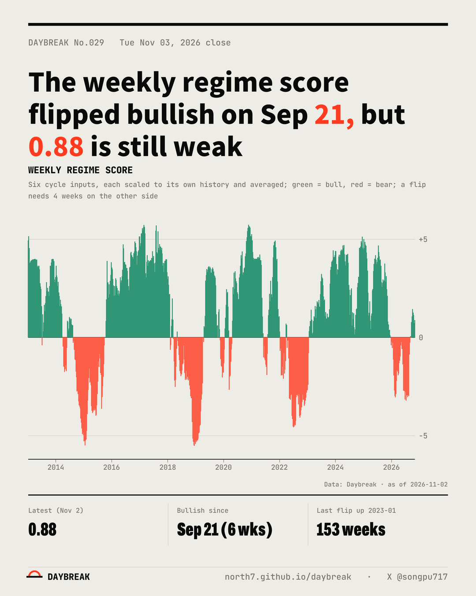
This is a composite I track. It takes six cycle inputs (200-day MA position, 12-month momentum, MVRV, realized cap, exchange supply, realized profit vs. loss), scales each against its own history and averages them. Green is bull, red is bear, and a flip needs 4 weeks on the other side.
It flipped bullish on Sep 21 and has held 6 weeks, at 0.88. The chart makes it obvious: real bull runs in past cycles pushed the score above +3, usually close to +5. We've barely cleared zero.
3. The case that the bull is here
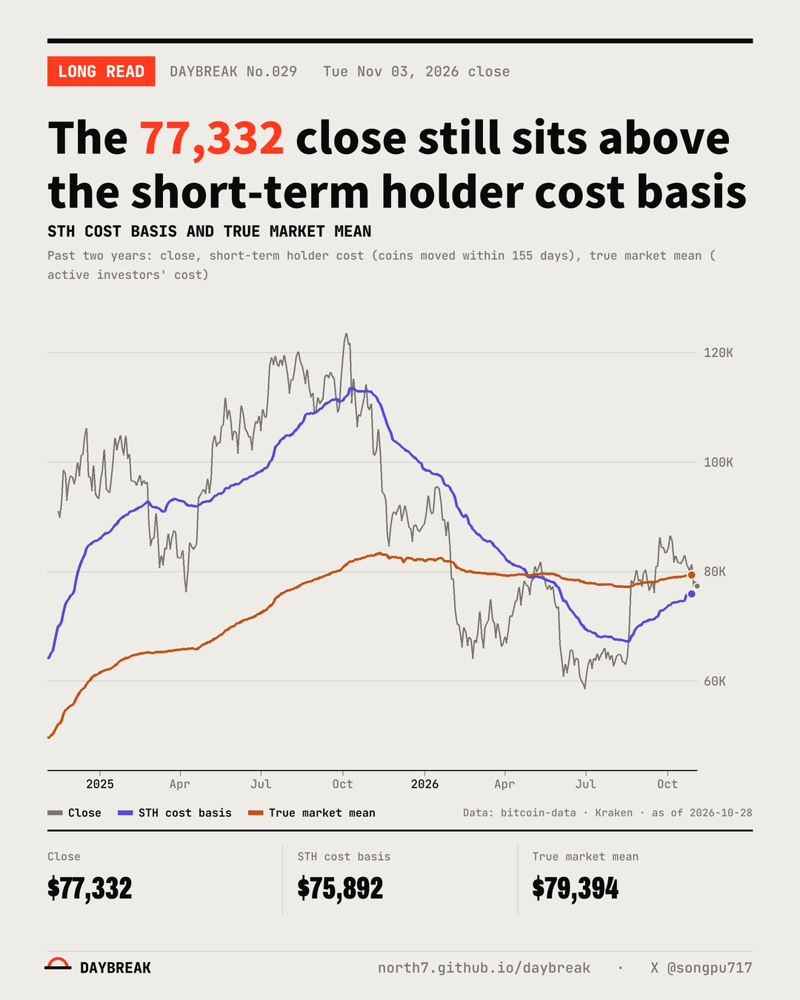
- Price is still above short-term cost: the 77,332 close is above the short-term holder cost basis of 75,892. Short-term holders have held for under 155 days, so recent buyers as a group are still above water.
- New money is still coming in, just slower: realized cap (the sum of every coin's last-moved price) is +0.67% over 30 days, positive for 72 days straight.
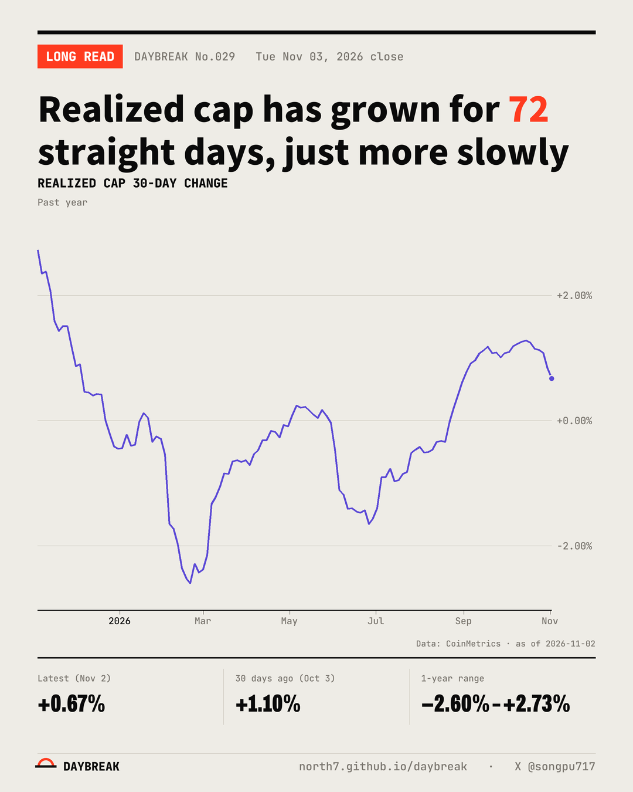
- Coins keep leaving exchanges: exchange supply is down 0.76% over 90 days.
I use 6 supporting signals for the bull phase, and 4 are on: MVRV above its 1-year average, positive 30-day realized cap growth, falling 90-day exchange supply, and price above the short-term holder cost basis.
4. The doubts are real too
The skepticism isn't baseless. The core issue: price is holding, but spot buyers haven't shown up.
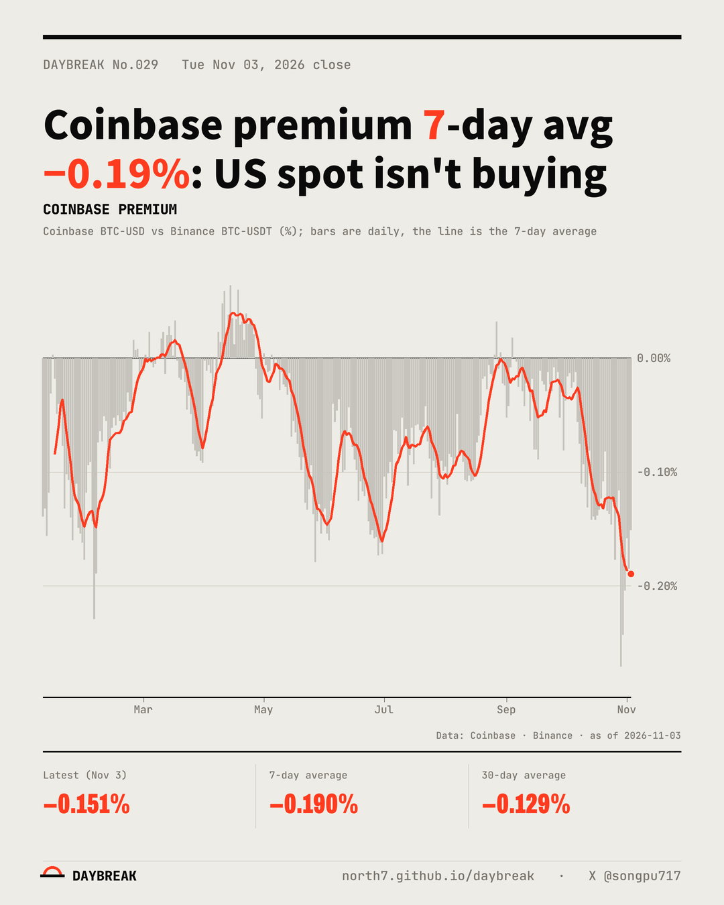
- US spot trades at a discount: the Coinbase premium 7-day average is −0.19%, the lowest since I started tracking it in January 2026. US spot buyers are less eager than the rest of the world.
- Asia isn't buying either: OKX's OTC USDT/CNY price is 1.14% below the FX rate, a sign Asian demand is soft too.
- Stablecoins are shrinking: $296B total, down $11.1B in 30 days.
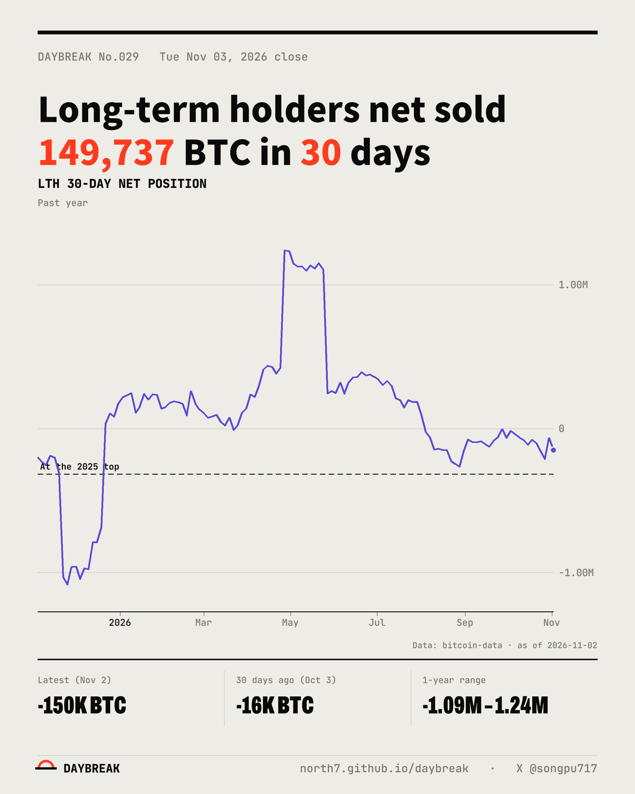
- Long-term holders are selling: net −149,737 BTC over 30 days. They've been net sellers for 91 days since Aug 4, while price rose 19.5%, so they've been selling into the bounce.
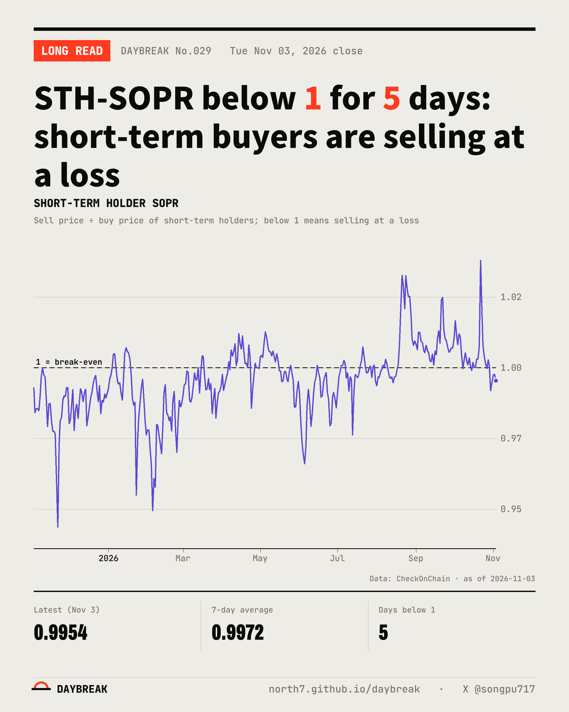
- Short-term buyers are selling at a loss: STH-SOPR is 0.9954, below 1 for 5 straight days. Only 32.29% of short-term holder supply is in profit, a 30-day low.
- Leverage is doing the lifting: weighted perp funding is 10.7% annualized. Longs are still paying to stay in.
Two of the supporting signals are off, and that's worth saying plainly. 12-month momentum is −30.5%, and short-term holder cost is still 4.41% below the true market mean.
5. What early bull phases looked like before
Back to Chart 2. Here's what happened after past bullish flips of the weekly regime score:
- Oct 5, 2015: stayed bullish for 128 weeks; price +154% a year later.
- Apr 22, 2019: lasted just 30 weeks before flipping back. A textbook false breakout.
- Jan 23, 2023: stayed bullish for 153 weeks; price +73% a year later.
This cycle flipped on Sep 21, 2026.
So I see it both ways. Doubt in an early bull phase is normal; 2015 and 2023 both had plenty. But 2019 is a reminder that early phases can fail, and no rule can rule that out ahead of time. With only three or four cycles to compare, history is context, not a guarantee.
6. What I'm watching next
- When short-term buyers stop selling at a loss: can STH-SOPR get back above 1?
- Whether 76K–75K holds: short-term holder cost basis sits at 75,192–75,892 (two data sources), and this band picked up 135K BTC of short-term supply on Nov 3 alone. If it holds, the cost base resets here. If it breaks, a lot more holders go underwater at once.
- Whether spot money comes back: a positive Coinbase premium and ETF net inflows. That's the missing piece of this bull market.
- The first level overhead: the true market mean at 79,394.
- Whether the weekly regime score can hold and climb: 0.88 is still hugging zero.
- The two signals still off: at the last 30 days' pace, short-term cost crosses the true market mean around Dec 22. If price stays flat, 12-month momentum turns positive around Feb 2027. Both are extrapolations, not forecasts.
On the calendar: US payrolls Nov 6, CPI Nov 10, FOMC Dec 9, Deribit quarterly options expiry Dec 25.
Bottom line
By the rule, the bull is here, and today is day 26. On cycle position, price is far from overheated and closer to past lows than past tops. On pace, this cycle is as slow as 2015. But it's an early bull where price moved first and spot money hasn't caught up. The selling comes from short-term buyers taking losses and long-term holders selling into strength. Leverage is holding it up.
The doubt makes sense to me. Instead of arguing about whether the bull is here, I'd watch whether spot buyers come back.
Does this cycle look more like 2015's slow grind or 2019's false breakout to you? Curious what you're seeing.
This is a data roundup, not trading advice. I post the numbers daily at Daybreak: https://north7.github.io/daybreak/
Sources: price, MVRV, realized cap, exchange supply from CoinMetrics; power law fitted by Daybreak on CoinMetrics prices; short-term holder cost, true market mean, LTH net position from bitcoin-data; short-term supply bands and STH-SOPR from CheckOnChain; Coinbase premium from Coinbase and Binance; ETF flows from Farside, SoSoValue, The Block; funding from Deribit, OKX, Hyperliquid.
If this is a bull market, why does it feel so weak?
At week 18 from the low, this cycle is up 31%. 2019 and 2023 were +69% and +72% by then. Slow, but 2015 was only +32%.
Cycle position, the bull case and the doubts, with 8 charts 👇
#Bitcoin #BTC #BullMarket
Standalone posts
7-lth-en.png | refresh
3-powerlaw-en.png
2-regime-en.png
4-cost-en.png | refresh